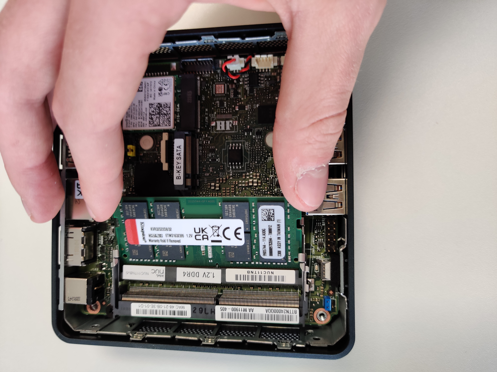
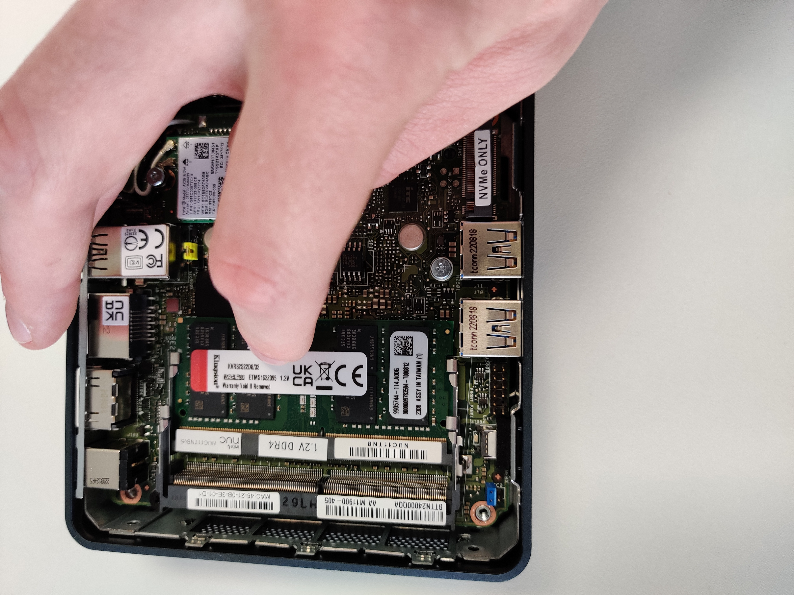
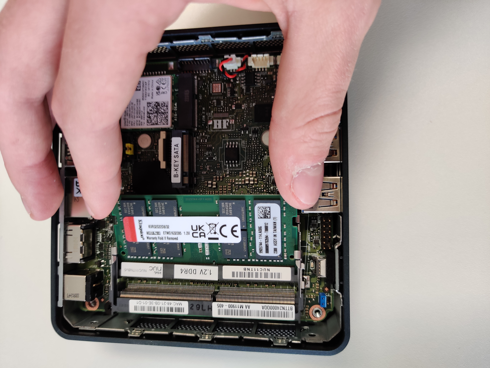
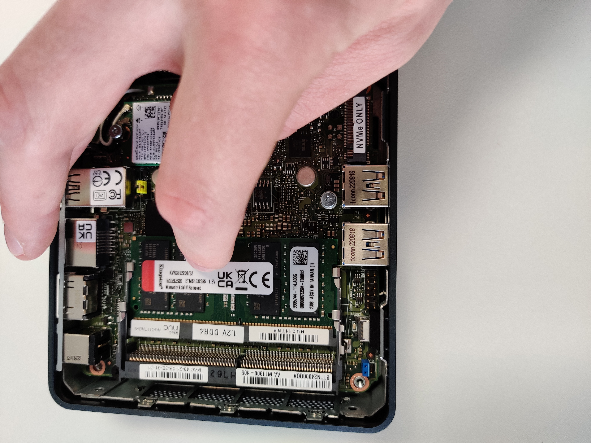
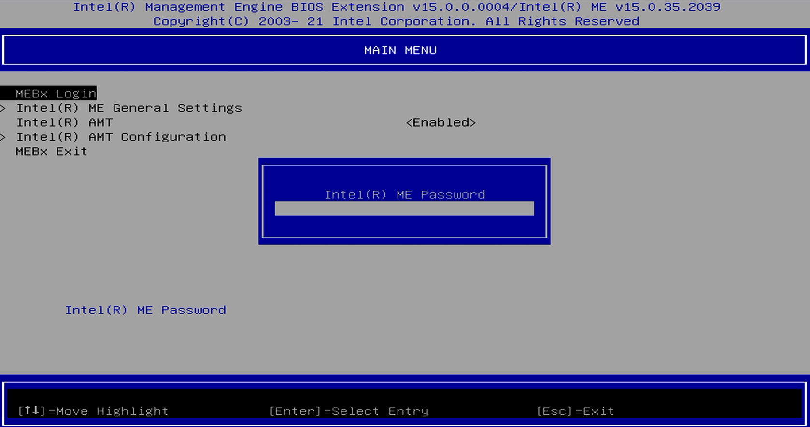
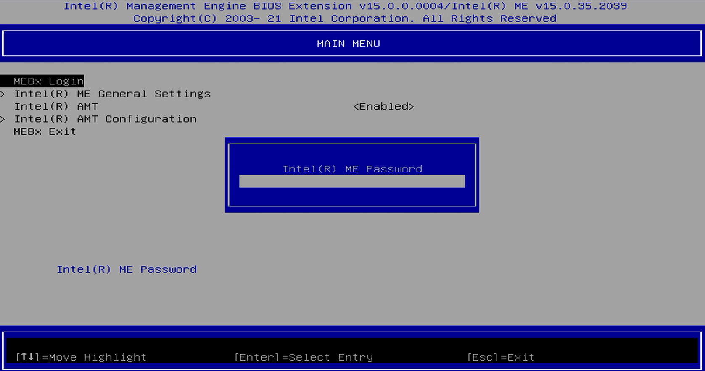
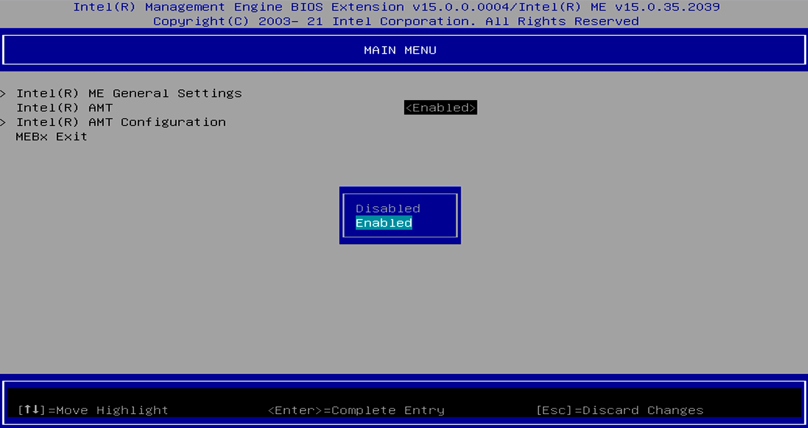
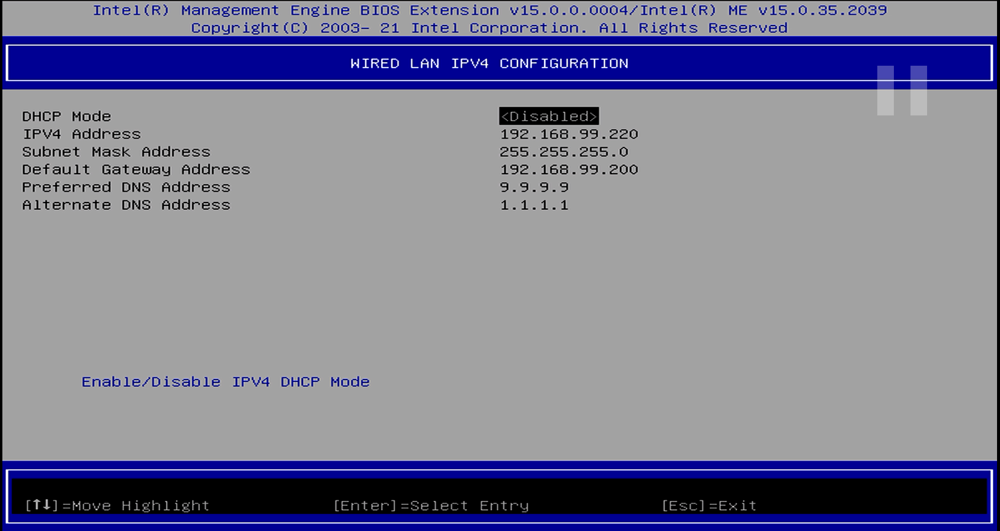
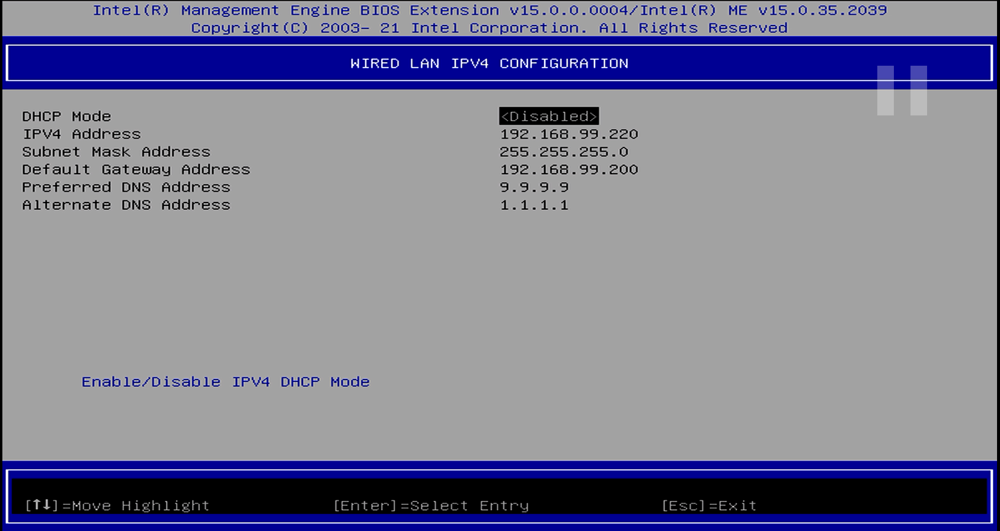
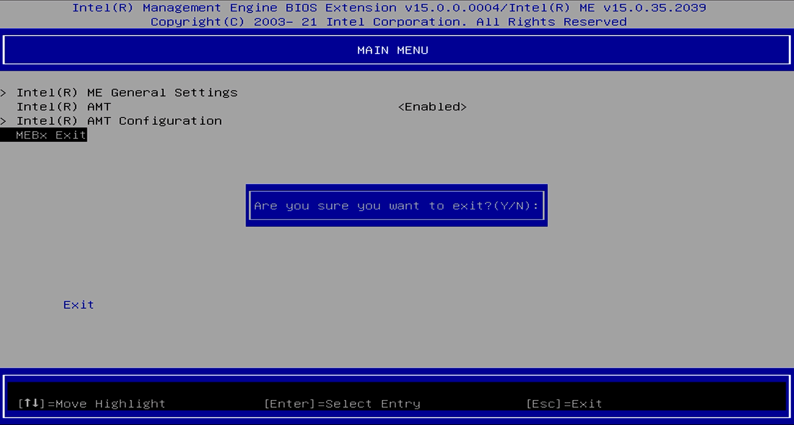

Voici une liste du matériel nécessaire :
Voici une liste du matériel qui doit être fourni


 




Brancher un câble hdmi sur un écran et le relier au NUC sur leport HDMI 1 (écrit au dessus) , faire de même avec câble ethernet,le clavier et la souris. Puis finir de brancher le NUC en reliant l'alimentation à ce dernier.
Allumer l'ecran puis le NUC via son bouton dédié sur la façade avant. Puis appuyer simultanément sur les touches "control" et "p" de votre clavier jusqu'à l'apparition d'un écran gris et bleu. Si cela ne marche pas, appuyer sur les touches "control","alt" et "suppr" pour recommncer l'étape.
 Sur le premier écran taper sur la touche "entrée" et saisir le mot de passe "qd,in"

Sur le premier écran taper sur la touche "entrée" et saisir le mot de passe "qd,in"

Saisir le nouveau mot de passe "1*xg9ioV" (on prendra soin d'utiilser le pavé numérique pour les chiffres et l'astérisque), appuyer sur la touche "entree" puis re-entrer le mot de passe pour valider.
Activer la fonction AMt comme dans l'image ci-dessous

Sortir du menu avec la touche "échap", puis rentrer dans le menu "intel amt configuration"

Puis dans le sous-menu "user consent" passer les valeurs :
User Opt-in -> none
Opt-in configurable from Remote IT -> Enable


Sortir du menu et activer l'option "activate network access" et valider avec la touche "y"
Passer au sous menu Network setup : mettre les options DHCP en false et remplir les champs avec ce qui à été fourni par la production
 

Puis passer au menu "power control" et mettre la valeur du "IDLE timeout" à 1800


Quitter avec la touche échap et penser à valider avec la touche "Y"
